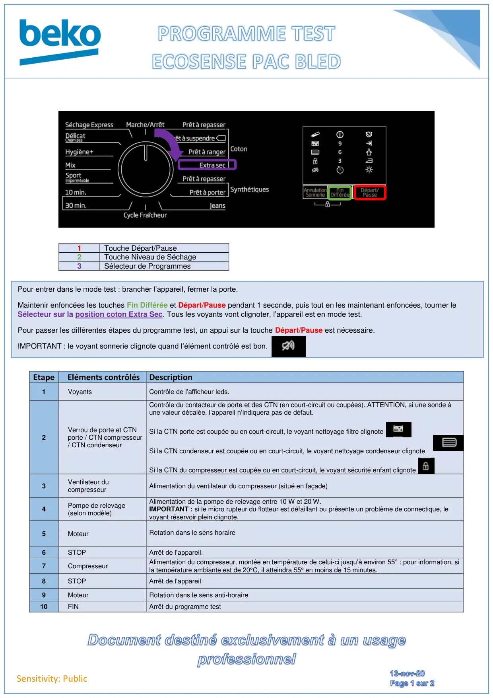
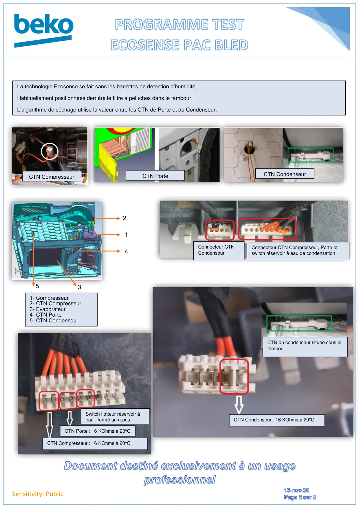

Prog Test seche linge PAC Ecosense BLED

Sensitivity: Public1Touche Départ/Pause2Touche Niveau de Séchage3Sélecteur de ProgrammesEtape Eléments contrôlésDescription1VoyantsContrôle de l’afficheur leds.2Verrou de porte et CTNporte / CTN compresseur/ CTN condenseurContrôle du contacteur de porte et des CTN (en court-circuit ou coupées). ATTENTION, si une sonde àune valeur décalée, l’appareil n’indiquera pas de défaut.Si la CTN porte est coupée ou en court-circuit, le voyant nettoyage filtre clignoteSi la CTN condenseur est coupée ou en court-circuit, le voyant nettoyage condenseur clignoteSi la CTN du compresseur est coupée ou en court-circuit, le voyant sécurité enfant clignote3Ventilateur ducompresseurAlimentation du ventilateur du compresseur (situé en façade)4Pompe de relevage(selon modèle)Alimentation de la pompe de relevage entre 10 W et 20 W.IMPORTANT : si le micro rupteur du flotteur est défaillant ou présente un problème de connectique, levoyant réservoir plein clignote.5MoteurRotation dans le sens horaire6STOPArrêt de l’appareil.7CompresseurAlimentation du compresseur, montée en température de celui-ci jusqu’à environ 55° : pour information, sila température ambiante est de 20°C, il atteindra 55° en moins de 15 minutes.8STOPArrêt de l’appareil9MoteurRotation dans le sens anti-horaire10FINArrêt du programme testPour entrer dans le mode test : brancher l’appareil, fermer la porte.Maintenir enfoncées les touches Fin Différée et Départ/Pause pendant 1 seconde, puis tout en les maintenant enfoncées, tourner leSélecteur sur la position coton Extra Sec. Tous les voyants vont clignoter, l’appareil est en mode test.Pour passer les différentes étapes du programme test, un appui sur la touche Départ/Pause est nécessaire.IMPORTANT : le voyant sonnerie clignote quand l’élément contrôlé est bon.
1 / 2
Sensitivity: PublicLa technologie Ecosense se fait sans les barrettes de détection d’humidité,Habituellement positionnées derrière le filtre à peluches dans le tambour.L’algorithme de séchage utilise la valeur entre les CTN de Porte et du Condenseur.CTN CompresseurCTN PorteCTN Condenseur214351- Compresseur2- CTN Compresseur3- Evaporateur4- CTN Porte5- CTN CondenseurConnecteur CTN Compresseur, Porte etswitch réservoir à eau de condensationConnecteur CTNCondenseurCTN du condenseur située sous letambourCTN Condenseur : 16 KOhms à 20°CSwitch flotteur réservoir àeau : fermé au reposCTN Compresseur : 16 KOhms à 20°CCTN Porte : 16 KOhms à 20°C
2 / 2